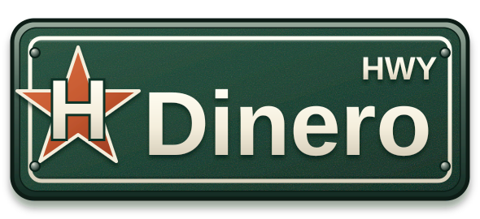
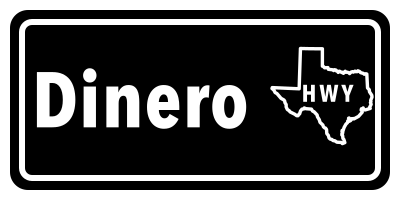

H-star waypoint
Use for favicons, avatars, app icons, merchandise, and section markers.
The sign is now one continuous natural dark-green blade. A large cream H sits over a rust five-point star, creating a strong Houston-rooted waypoint without copying a team badge. Reflective lettering, a metal rim, subtle grain, rivets, and raised shadows make the identity feel physically made.
Dinero remains the street name; HWY stays in the upper-right. The H-star is larger and reads clearly at a glance.

The H-star mark handles compact placements; the flat one-color version handles production.
Use for favicons, avatars, app icons, merchandise, and section markers.

Use for embroidery, vinyl, stamps, invoices, and small monochrome reproduction.
The star, cream pinstripe, natural green, and raised physical depth can carry the site without repeating the complete sign.
The interface borrows the material language while staying clean and usable.
Practical websites and automation for the businesses that make a neighborhood worth knowing.
Start here